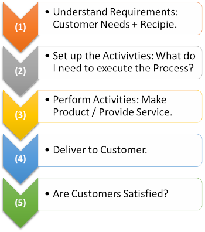

Let’s explain the meaning, definitions, & strategies of the quality management system as short & as simple as possible.
Pretend for a minute that you decide to start your own a Pizza Store.
لا يهم إذا اخترت تشغيله بمفردك أو إذا اشتريت حق امتياز. سيحتاج تحضير بيتزا بالسجق، إلى السجق والجبن والصلصة وعجينة البيتزا أيًا مكان مطعم البيتزا. ومع ذلك، عندما تذهب إلى مطاعم مختلفة للبيتزا، تشعر دائمًا بفروقات. ظاهريًا، يجب أن تكون متشابهة، ولكن اعتمادًا على مطعم البيتزا الذي تختاره، يمكن أن تكون بعض المكونات و/أو الوصفات مختلفة.
لكل مطعم بيتزا طريقته الخاصة في القيام بالأشياء. يمكن أن تكون طريقة تجميع مكونات البيتزا مختلفة. طريقة أخذ الطلب والتعامل معه وإيصاله يمكن أيضًا أن تختلف. قام كل مطعم بيتزا، كل على طريقته الخاصة، بوضع طرق للقيام بالأشياء (العمليات)، لضمان فهم عملية طلب لبيتزا بالسجق، يمكن تنفيذها بواسطة فريقهم. أي أن هناك:
"أنشطة محددة لإكمال إعداد وتسليم البيتزا المطلوبة."
في حالة العمل بحق الامتياز من شركة شهيرة للبيتزا، قد تكون الأنشطة الرئيسية محددة لك مسبقًا (موحدة). أما في حالة مطعمك الخاص، تكون الأنشطة ذاتية التطوير (من تصميمك).
"الطريقة التي تمارس بها الأعمال.".
جميع الأنشطة (العمليات) التي يضعها مطعم البيتزا معًا لضمان حصول العميل على ما يطلبه، هي في الواقع ما نسميه: نظام إدارة الجودة. قد تسميها أنت "الطريقة التي نؤدي بها أعمالنا" وهذا أيضًا صحيح تمامًا. يعد نظام إدارة الجودة جزءًا أساسيًا من أي عمل تجاري، لكن معظم الناس لا يسمونه كذلك.
الجودة هي: "عندما يلبي المنتج احتياجات العملاء، مما يؤدي إلى نيل رضاهم"، و ... "جميع الأنشطة التي تشارك فيها الشركة، لضمان أن المنتج يلبي احتياجات العملاء". لذلك يمكننا أن نقول:
يتم تنفيذ أنظمة إدارة الجودة لضمان رضا العملاء. يمكن لكل شركة أن تبتكر الوصفة الخاصة بها لتحقيق النجاح. عند وضع وصفة النجاح، عليك أن تقرر أنت كيف سيتم بناء نظام إدارة الجودة الخاص بك.
أنت تحدد العمليات التي تساعدك على تقديم منتجك أو خدمتك بطريقة متسقة والتي تلبي في نفس الوقت المتطلبات المحددة. على سبيل المثال، في مطعم البيتزا، قد يكون لديك الخطوات التالية عند إنشاء طلب:

An example of a QMS.
Often Quality Management Systems (QMS) are associated with having documents – such as procedures, work instructions, forms, etc. They may be in digital or printed format. Formal instructions (documentation) is a component of the QMS, but not the center of it. In the case of the Pizza Store, we can argue that all the documents you need are the pizza recipes & a clear manner to convey “special” order requirements (i.e., light sauce, extra cheese, etc.).
You decide what works for your company & how you build up a QMS, “your way of doing things”.
Keep your QMS simple
When defining your own QMS (Quality Management System), keep it simple. We have found that many companies & organizations simply do not implement QMS due to the over-complication of procedures, which eventually never get off the ground. Start simple & grow as your business grows.
If you are interested in defining or re-defining your Quality Management System, email us at 4z4quality@gmail.com we are here to help you increase customer satisfaction.
Call 4Z for Quality Today at +973 3399 5807.